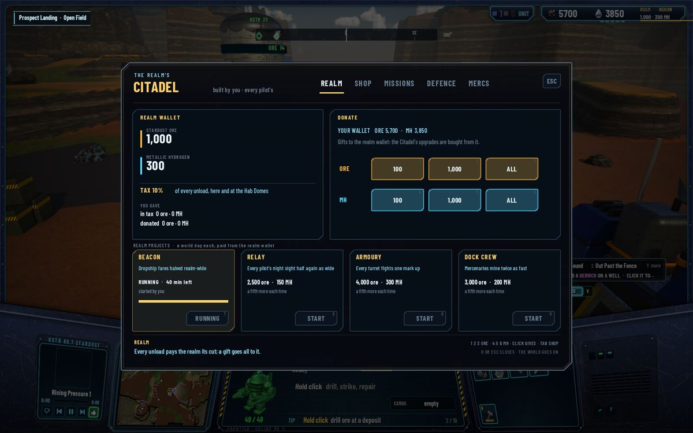
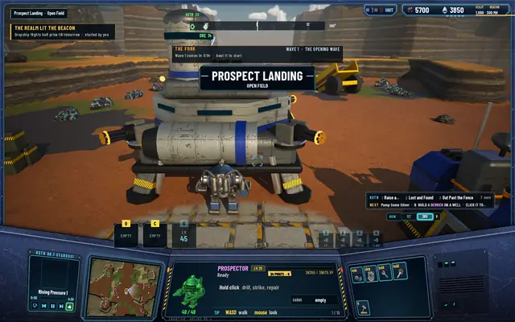
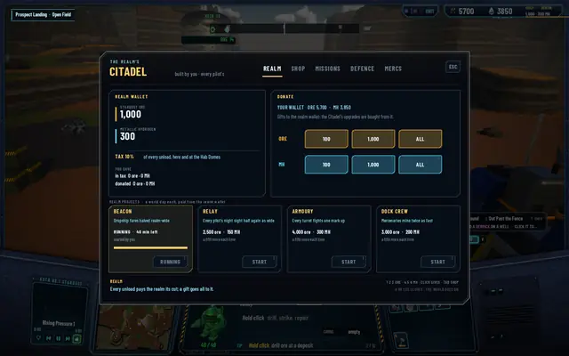

Realm projects: what the tax is for
The Citadel takes a tenth of every unload into a realm wallet, and until today that wallet could buy twelve marks for the Citadel's own guns and nothing else. Now any pilot can spend it on one of four projects that help every pilot in the realm for a world day. This closes milestone 9.

The balance pass noted the problem: one mining pilot's tax bought all twelve Citadel marks in six or seven hours, and after that the realm only filled. The manager's answer is a sink that pays everyone back.
The four projects
- Beacon. Dropship fares halved realm-wide, and a quarter when the realm has a Spacedock. Measured: a flight to Cold Fork cost 15 MH, and 8 with the Beacon lit. 2,000 ore and 100 MH.
- Relay. Every pilot's night sight half again as wide; the headlamp is untouched. Measured at midnight: 673 cells seen, 1,179 with the Relay. 2,500 ore and 150 MH.
- Dock Crew. The mercenaries mine twice as fast, a twelfth of a pilot's rate in place of a twenty-fourth, their offline work included. 3,000 ore and 200 MH.
- Armoury. Every turret in the realm, the Citadel's corner guns included, fights one mark up, capped at mark 3. 4,000 ore and 300 MH.
Each runs for a world day, 40 minutes, and costs about two to four hours of one mining pilot's tax. Every repeat costs a fifth more. Any human starts one at the Citadel's REALM tab, with the realm's money; the frontier pilots pay into the wallet like everyone and never start a project. When one starts and when it ends, the whole realm gets a toast and KSTR's announcer reads a line: eight lines, 3.3 to 5.6 seconds, made offline like the rest.
Old saves load with no project running. Protocol 29, save schema 22.
In pictures

THE REALM LIT THE BEACON: half-price flights till tomorrow. The wallet readout shows which project runs.
The REALM tab: every unload pays the realm its cut; a gift goes all to it.


What comes after: the long game
Milestone 10 is planned, with no dates. The mode is called an MMORPG and has only ever been played by one human at a time, so the first task is two game clients on one server in a hidden run, seeing each other's Prospectors, buildings and flights and splitting a wave's pay. Then an away report when you come back, from the server's own bookkeeping, never invented; realm standings over a realm week, with a weekly reset on the radio; the Matriarch hunt, called by a human at the Citadel with the frontier defenders and the mercenaries gathering at her nest; a real settings menu; and a two-hour soak of the background server's idle path, the thing that runs while the game is closed.